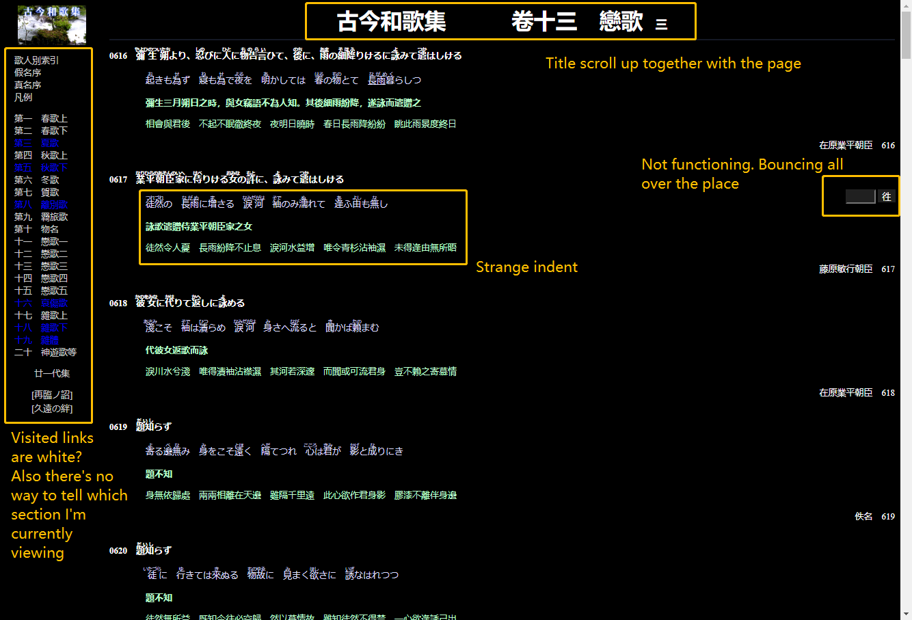

An annotated screenshot of the original page. I choose it as I've used this archive excessively.
I came across this website a few years ago while searching for the original text of some wakas.
It contains the Japanese text & Chinese translation of many waka's from "the Kokin Shu".
It serves very well as an archive -- it is roughly indexed, and though not aesthetically excellent, it is at least simple and concise.
However, there are some minor problems that can be fixed:
- The formatting is weird:
1) indents do not align with the semantics of the content,
2) the author's name is pushed towards the rightmost (the website is not responsive) -- it'll appear a mile away the rest of the content
when the viewport is wide.
- Efficiency/Memorability/Accessibility problem: The title scroll up when scrolling, meanwhile the directory on the left indicates
not our position but which sections have been visited -- this requires a bit extra memory or constant checking backs if we want to know what we're looking at.
(And the visited sections are white while the unvisited are blue -- pretty counter-intuitive!).
- The box that's supposed to jump to certain poem is useless now. It just serves to annoy you a little bit ;)
WAVE also suggests the similar: that it is missing heading structure and page regions.
--We're probably not going to have a super clear and complex structure, since there's not that much content, but we can probably make it look more structured visually.
Let's get started!